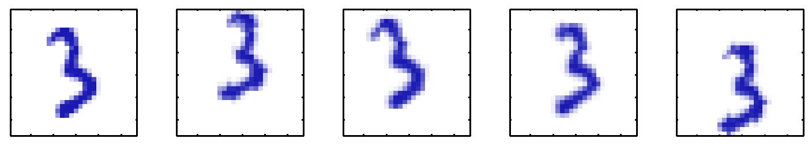
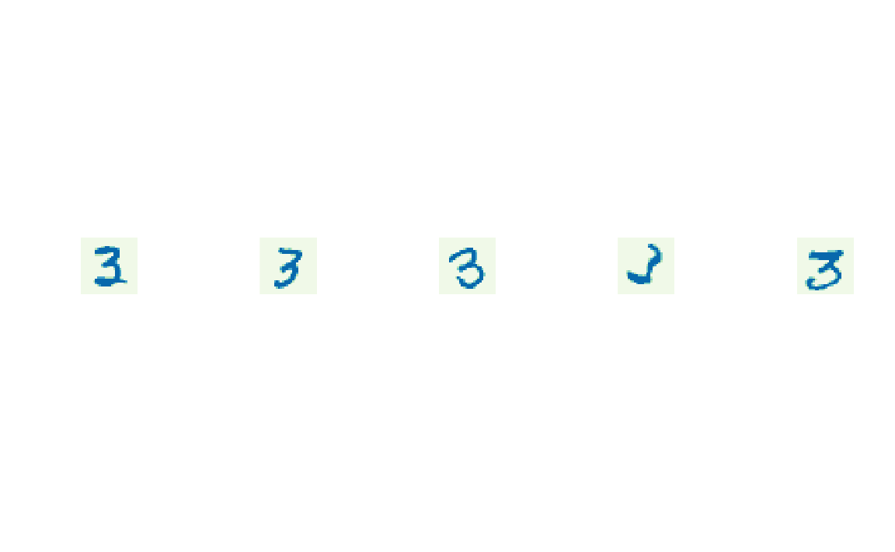
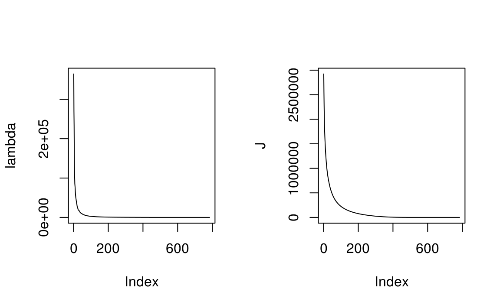

Clase 14 Componentes Principales 1
library(tidyverse)
library(RColorBrewer)14.1 Motivación
Muchos conjuntos de datos tienen la propiedad que los puntos caen en un variedad de dimensión mucho menor a la dimensión original de los datos.
Para entender esta idea consideremos una base de datos consrtuida con uno de los dígitos de la base de datos mnist, esta imagen esta representada por una matriz de \(64 \times 64\) pixeles, ahora insertamos este dígito en una matriz más grande de \(100 \times 100\) agregando espacio en blanco y variamos de manera aleatoria la orientación y ubicación del dígito.

Cada una de las imágenes resultantes está representada por un punto en el espacio de dimensión \(100 \times 100 = 10,000\); sin embargo, en una base de datos construida de esta manera solamente hay 3 grados de libertad de variabilidad, estas corresponden a las rotaciones, trasalación vertical y traslación horizontal.
Para datos reales habrá más grados de libertad debido por una parte a escalamiento y por otra habrá múltiples grados adicionales debidas a deformaciones debidas a la variabilidad en la escritura de un individuo y entre individuos. Aún así, la la dimensionalidad de los grados de libertad es mucho menor que la de los datos completos.
if(!file.exists("datos/mnist/train-images-idx3-ubyte")){
mnistR::downloadMNIST(dest = "datos/mnist/")
}
mnist <- mnistR::loadMNIST(dest = "datos/mnist/")[["train"]]
data_tres <- mnist %>%
filter(y == 3) %>%
select(-y)
par(mfrow=c(1,5))
imageD <- function(vec, main = NULL){
mat_digit <- matrix(vec, nrow = 28)[, 28:1]
mat <- matrix(unlist(mat_digit), nrow = 28)
image(mat, col = brewer.pal(5, "GnBu"), xaxt = "n", yaxt = "n",
bty = "n", asp = 1, main = main)
}
for(i in sample(1:nrow(data_tres), 5)){
imageD(data_tres[i, ])
}
El análisis de componentes principales (PCA) es una técnica que se utiliza con distintos objetivos:
Reducción de dimensionalidad.
Compresión de información con pérdida (lossy).
Extracción de características o (features).
Visualización de datos.
Podemos ver PCA desde dos puntos de vista que nos llevan al mismo resultado:
PCA se puede definir como una proyección de los datos en un espacio de dimensión menor (conocido como subespacio principal), tal que la varianza de los datos proyectados es máxima.
- PCA se puede definir como la proyección lineal que minimiza el costo medio de proyección, donde el costo promedio es la distancia media al cuadrado entre los puntos y sus proyecciones.
14.2 Formulación de máxima varianza
Consideremos un vector de observaciones \((y^1,...,y^n)\) donde \(y_i\) es de dimensión \(d\). Nuestro objetivo es proyectar los datos en un espacio de dimensión \(M<D\) maximizando la varianza de la proyección.
Comencemos considerando la proyección en un espacio de dimensión uno, denotamos la dirección de este espacio por \(u_1\) y por conveniencia usamos un vector unitario (\(u_1^Tu_1=1\)). La proyección de cada punto \(y_i\) es un escalar (pues \(M=1\)) cuyo valor es \(u_1^Ty_i\). La media de los datos proyectados es \(u_1^T\bar{y}\) donde
\[ \bar{y}=\frac{1}{N}\sum_{i=1}^N y_i \] por tanto la varianza de los datos proyectados es \[ \frac{1}{N}\sum_{i=1}^N (u_1^Ty_i-u_1^T\bar{y})^2=u_1^TSu_1 \] donde S es la matriz de covarianzas de los datos: \[ S=\frac{1}{N}\sum_{i=1}^N (y_i-\bar{y})(y_i-\bar{y})^T. \]
Ahora maximizamamos la varianza de la proyección respecto a \(u_1\): \[ \mbox{argmax}_{u_1}u_1^TSu_1 + \lambda_1(1-u_1^Tu_1) \] Derivando encontramos un punto estacionario en \[ Su_1=\lambda_1u_1 \] por lo que \(u_1\) debe ser un eigenvector de S, notamos también que la varianza esta dada por: \[ u_1^TSu_1=\lambda_1, \] y por tanto, la varianza será máxima si igualamos \(u_1\) con el mayor eigenvector de \(S\), que llamamos primer componente principal.
Si elegimos \(M>1\), definimos los componentes de manera incremental, en cada paso seleccionamos una nueva dirección eligiendo cada nueva dirección como aquella que maximiza la varianza de la proyección sujeta a ser ortogonal a las direcciones (componentes) ya elegidos. Esto resulta en que la proyección lineal óptima para la cual la varianza de los datos proyectados es máxima esta definida por el conjunto de \(M\) eigenvectores \(u_1,...,u_M\) de la matriz de covarianzas \(S\).
14.3 Formulación de error mínimo
Ahora discutimos el segundo punto de vista de PCA. Sea \((u_1,...,u_D)\) una base ortonormal de vectores, esto es \(u_i^Tu_j = 0\) para toda \(i\) distinta de \(j\) y \(u_i^Tu_i = 1\).
Como esta es una base de \(R^D\) podemos expresar los datos observados como
\[ y_i=\sum_{j=1}^D \alpha_{ij}u_j \]
Esto corresponde a una rotación en el sistema de coordenadas. Utilizando la propiedad ortonormal obtenemos \(\alpha_{ij}={y_i} ^Tu_j\), por tanto:
\[ y_i=\sum_{j=1}^D ({y_i} ^Tu_j) u_j \]
Ahora, como buscamos aproximar este punto (\(y_i\)) usando una representación que involucre un número de variables \(M<D\), la subespacio de dimensión \(M\) se puede representar usando los primeros \(M\) vectores de la base, de tal manera que podemos aproximar cada punto como:
\[ \hat{y}_i=\sum_{j=1}^M x_{ij}{u_j} + \sum_{j=M+1}^D b_j u_j \]
donde los valores \(x_{ij}\) dependen del dato que estamos proyectando y las \(b_j\) son constantes para todos los datos. Buscamos \((u_1,...,u_D)\), \(x_{ij}\) y \(b_j\) tal que se minimice la distorsión introducida por la reducción de dimensión, donde definimos la distorsión como la distancia al cuadrado entre el punto original \(y_i\) y la aproximación \(\hat{y}_i\) promediada sore todos los puntos de la base de datos:
\[ J=\frac{1}{N}\sum_{j=1}^N(y_j-\hat{y}_j)^T(y_j-\hat{y}_j) \]
La minimización (derivar e igualar a cero) nos lleva a:
\(x_{ij}=y_i^Tu_j\), con \(j=1,...,M\)
\(b_{j}=\bar{y}^Tu_j\), con \(j=M+1,...,D\)
Sustituyendo \(x_{ij}\) y \(b_j\) en \(y_i=\sum_{j=1}^D ({y_i} ^Tu_j) u_j\) llegamos a \[ y_i-\hat{y}_i=\sum_{j=M+1}^D [(y_n-\bar{y})^Tu_j]u_j \]
y vemos que el error mínimo ocurre en la proyección ortogonal sobre el subespacio generado por \(\{u1,...,u_M\}\).
Usando lo anterior obtenemos
\[ J=\frac{1}{N}\sum_{j=1}^N \sum_{i=M+1}^D [(y_n-\bar{y})^Tu_j]^T[(y_n-\bar{y})^Tu_j] \] \[ J=\frac{1}{D}\sum_{j=1}^D u_i^TSu_i \]
Aún falta minimizar \(J\) respecto a \(u_i\), esta es una minimización con la restricción \(u_i^Tu_i=1\), si derivamos respecto a \(u_i\) obtenemos
\[ Su_i=\lambda_i u_i \]
por lo que cualquier eigenvector de S corresponde a un punto crítico. Si todos corresponden a un punto crítico ¿cómo elegimos? Notemos que si sustituimos la solución de \(u_i\) en J obtenemos
\[ J=\sum_{j=M+1}^D \lambda_j \]
por lo que para obtener el mínimo valor de \(J\) hay que seleccionar los \(D-M\) eigenvectores corresponidientes a los menores eigenvalores y por tanto los eigenvectores que definen el subespacio principal corresponden a los \(M\) eigenvectores mayores.
14.4 Aplicaciones de PCA
Veamos un par de aplicaciones de PCA, comenzaremos con compresión de imágenes y luego examinaremos PCA como preprocesamiento.
14.4.1 Compresión de datos
Veamos un ejemplo de PCA para compresión de información usando la base de datos de mnist, en particular veamos los dígitos tres.
dim(data_tres)
#> [1] 6131 784Como cada eigenvector es un vector en el espcio original de \(D\) dimensiones podemos representarlos como imágenes.
tres_mean <- apply(data_tres, 2, mean)
S <- cov(data_tres)
eigen_S <- eigen(S)
lambda <- eigen_S$values
u <- eigen_S$vectors
par(mfrow=c(1,5))
imageD(tres_mean)
for(i in 1: 4){
imageD(u[, i])
}Podemos ver el resto de los eigenvalores en la gráfica de abajo. Graficamos también la medida de distorsión \(J\) asociada a la elección del número de componentes \(M\) (dada por la suma de los eigenvalores \(M+1\) a \(D\)).
D <- length(lambda)
J <- sapply(1:D, function(i){sum(lambda[i:D])})
par(mfrow=c(1,2))
plot(lambda, type = "l")
plot(J, type = "l")
Si vemos las fórmulas de arriba podemos escribir el vector de aproximación correspondiente a una observación.
\[ \begin{eqnarray*} \hat{y}_i&=&\sum_{j=1}^M x_{ij}{u_j} + \sum_{j=M+1}^D b_j u_j\\ &=&\sum_{j=1}^M y_i^Tu_j{u_j} + \sum_{j=M+1}^D \bar{y}^Tu_j u_j\\ &=&\bar{x} + \sum_{j=1}^M (y_i^Tu_j-\bar{x}^Tu_j)u_j \end{eqnarray*} \]
donde usamos:
\[ \bar{x}=\sum_{j=1}^D (\bar{x}^Tu_j)u_j. \]
La compresión está en que reemplazamos cada vector de observaciones de dimensión \(D\) (\(y_i\)) por un vector de dimensión \(M\).
La siguiente figura muestra la compresión para distintos valores de \(M\) del primer dígito de la base de datos.
tres_1 <- data_tres[3, ]
par(mfrow=c(1,5))
imageD(tres_1)
for(M in c(1, 10, 50, 300)){
u_M <- u[, 1:M]
y_M <- as.numeric(tres_1) %*% u_M
y_approx <- tres_mean + y_M %*% t(u_M)
imageD(y_approx)
}14.4.2 Ejemplo: compresión de una imagen
14.4.2.1 Preprocesamiento
Otra aplicación de componentes principales es preprocesamento, en este caso el objetivo no es reducción de dimensión sino la transformación de un conjunto de daros con el fin de estandarizar algunas de sus propiedades. Esto puede ser importante para el correcto funcionamiento de algoritmos o métodos que se desean usar después.
Veamos los datos faithful de erupciones del volcán Old Faithful.
head(faithful) %>% knitr::kable()| eruptions | waiting |
|---|---|
| 3.60 | 79 |
| 1.80 | 54 |
| 3.33 | 74 |
| 2.28 | 62 |
| 4.53 | 85 |
| 2.88 | 55 |
Notamos que el tiempo entre erupciones es de un orden de magnitud mayor que la duración de la erupción. Por ejemplo, si quisiéramos hacer k-medias (siguiente tema) sería natural estandarizar los datos. Sin embargo, con PCA podemos normalizar los datos para tener cero media y covarianza unitaria, de tal manera que la correlación entre distintas variables es cero.
Para hacer esto escribimos la ecuación de eigenvectores como
\[ SU=UL \]
donde \(L\) es una matriz diagonal con los elementos \(\lambda_i\) y \(U\) es una matriz ortogonal cuyas columnas son los vectores \(u_i\). Entonces, para cada observación \(y_i\) definimos su valor transformado
\[ z_i=L^{-1/2}U^T(y_i-\bar{y}) \]
es claro que el conjunto \((z_1,...,z_N)\) tiene media cero, veamos ahora la covarianza:
\[ \frac{1}{N}\sum_{j=1}^Nz_jz_j^T=\frac{1}{N}\sum_{j=1}^NL^{-1/2}U^T(y_j-\bar{y})(y_j-\bar{y})^TUL^{-1/2} \]
\[ =L^{-1/2}U^TSUL^{-1/2}=L{-1/2}LL^{-1/2}=I \]
Esta operación se conoce como whitening o sphereing.
14.4.3 Ejemplo: grado de marginación
El grado de marginación fue definido por CONAPO desde 1990:
tiene como misión incluir a la población en los programas de desarrollo económico y social que se formulen dentro del sector gubernamental y vincular sus objetivos a las necesidades que plantean los fenómenos demográficos
permite diferenciar municipios según el impacto global de carencias que padece la población como resultado de la falta de acceso a la educación, la residencia en viviendas inadecuadas, la percepción de ingresos monetarios insuficientes y las relacionadas con la residencia en localidades pequeñas
contribuye a identificar las disparidades territoriales que existen entre los municipios
ha sido utilizado como criterio de las reglas de operación de diversos programas, lo que es un indicativo de su aceptación y uso cada vez más generalizado
define 4 dimensiones de la marginación: educación, vivienda, distribución de la población, ingresos monetarios
base_estados <- read_csv("datos/base_estados.csv")
base_estados %>% head(10) %>% knitr::kable()| CVE_ENT | NOM_ENT | POB_TOT | ANALF | SPRIM | OVSDE | OVSEE | OVSAE | VHAC | OVPT | PL<5000 | PO2SM | OVSDSE | IM | GM | IND0A100 | LUGAR | ANIO |
|---|---|---|---|---|---|---|---|---|---|---|---|---|---|---|---|---|---|
| 1 | Aguascalientes | 719659 | 7.06 | 33.9 | 10.88 | 4.97 | 4.18 | 51.0 | 7.45 | 26.97 | 62.5 | - | -0.89 | Bajo | - | 27 | 1990 |
| 2 | Baja California | 1660855 | 4.68 | 24.0 | 4.89 | 10.49 | 19.59 | 45.4 | 8.13 | 11.95 | 40.0 | - | -1.34 | Muy bajo | - | 30 | 1990 |
| 3 | Baja California Sur | 317764 | 5.39 | 27.8 | 7.03 | 11.10 | 10.17 | 48.6 | 13.99 | 25.60 | 54.1 | - | -0.97 | Bajo | - | 28 | 1990 |
| 4 | Campeche | 535185 | 15.40 | 44.8 | 24.8 | 15.02 | 29.52 | 65.0 | 24.16 | 36.21 | 68.1 | - | 0.48 | Alto | - | 10 | 1990 |
| 5 | Coahuila de Zaragoza | 1972340 | 5.48 | 28.2 | 10.81 | 5.24 | 7.76 | 50.0 | 8.48 | 17.13 | 60.9 | - | -1.05 | Bajo | - | 29 | 1990 |
| 6 | Colima | 428510 | 9.30 | 36.0 | 8.37 | 5.82 | 6.61 | 56.0 | 21.13 | 22.39 | 50.4 | - | -0.76 | Bajo | - | 23 | 1990 |
| 7 | Chiapas | 3210496 | 30.12 | 62.1 | 42.66 | 34.92 | 42.09 | 74.1 | 50.90 | 66.56 | 80.1 | - | 2.36 | Muy alto | - | 1 | 1990 |
| 8 | Chihuahua | 2441873 | 6.12 | 30.9 | 14.1 | 13.23 | 11.96 | 47.8 | 9.58 | 25.57 | 52.8 | - | -0.87 | Bajo | - | 26 | 1990 |
| 9 | Distrito Federal | 8235744 | 4.00 | 16.8 | 1.81 | 0.76 | 3.33 | 45.6 | 2.45 | 0.32 | 60.5 | - | -1.69 | Muy bajo | - | 32 | 1990 |
| 10 | Durango | 1349378 | 6.99 | 39.5 | 32.38 | 13.73 | 14.98 | 53.5 | 20.04 | 49.29 | 67.7 | - | 0.01 | Alto | - | 15 | 1990 |
Aplicar el método de componentes principales (utilizar
pcomp)Hacer gráfica de los dos componentes.